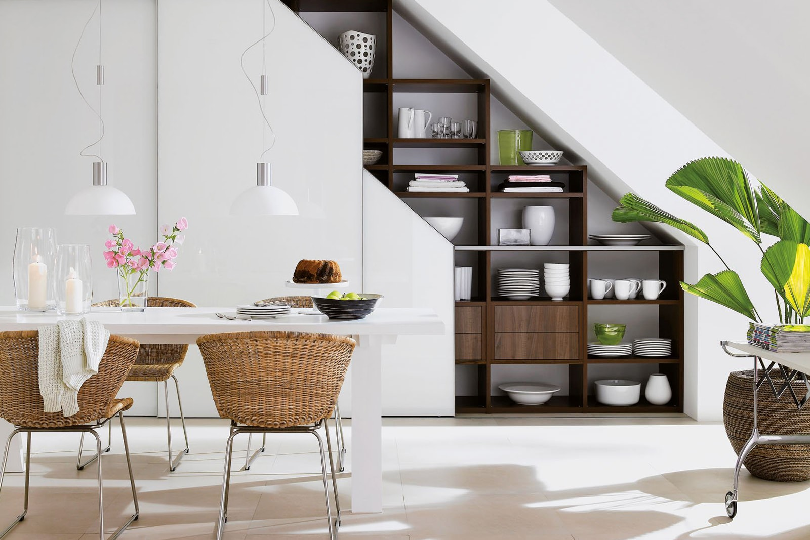
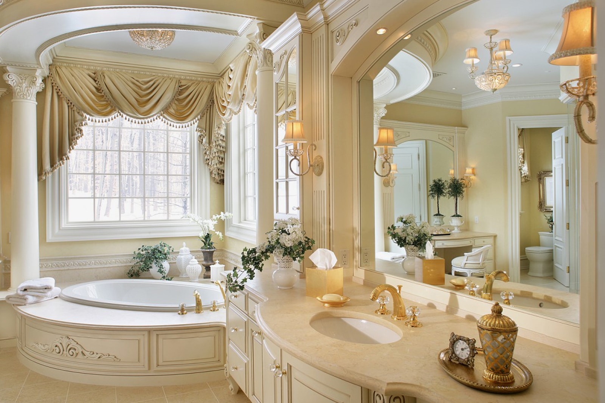
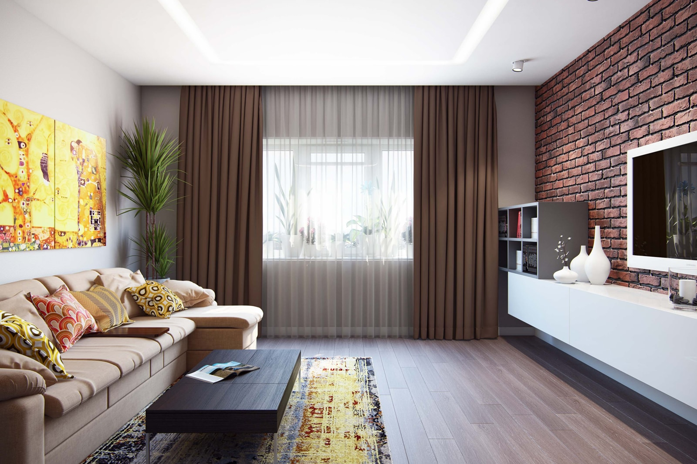
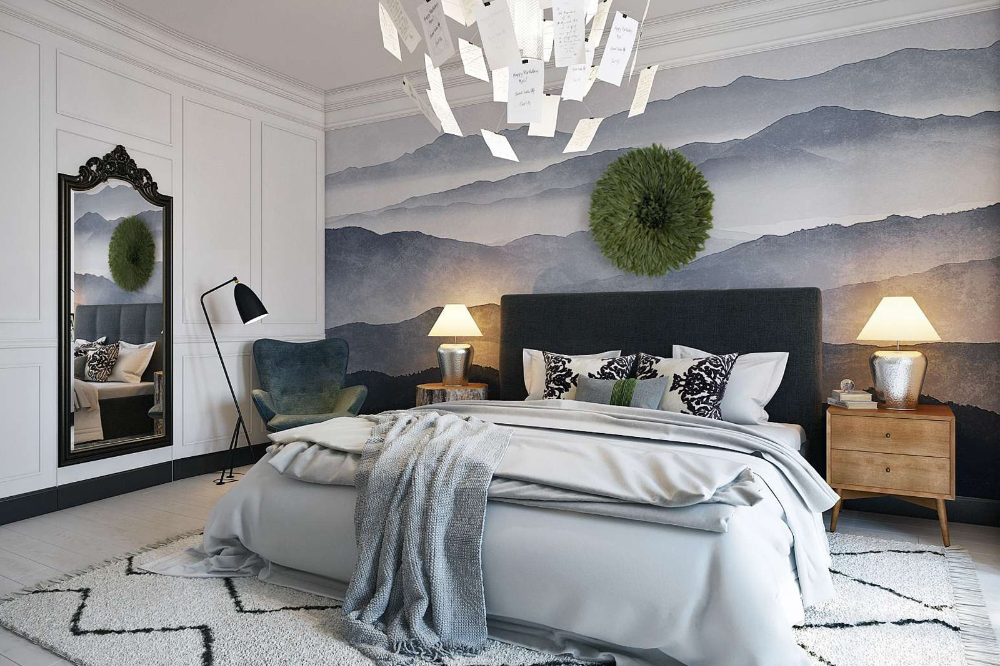
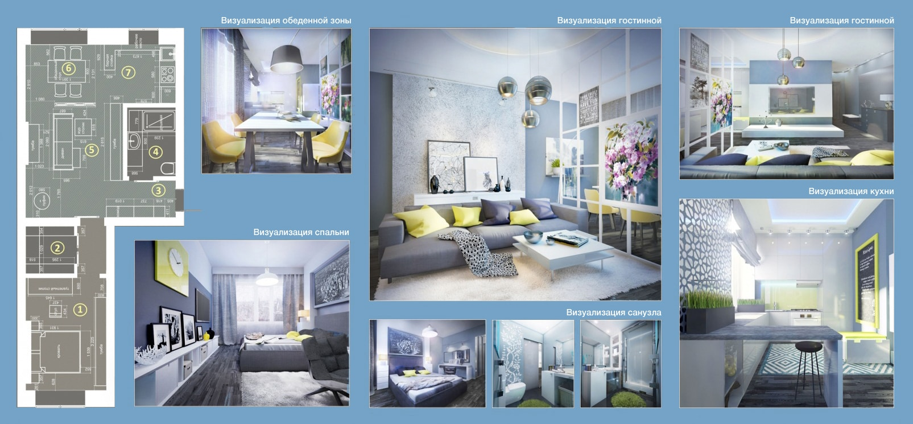

Desent
Виды и типы дизайн-проектов
Дизайн-проект интерьера квартиры — это пакет документов, который состоит из подробных планов, чертежей и эскизов будущего оформления подсобных и жилых помещений. Комплекты проектной документации различаются между собой видом услуг, объемом работ и ценой.
Базовый вариант
В понятие базового проекта интерьера входит:
Помимо этого составляются рекомендации по подбору мебели, сантехники для ванной и оборудования для кухни. Обязательной составляющей базового дизайн-проекта является консультация по выбору и приобретению отделочных и строительных материалов.
Эскизный дизайн-проект
Самым простым в разработке является эскизный проект интерьера. Кроме обязательного обмерного чертежа создается:
Декоративный дизайн-проект
   Этот вид проектирования может быть как отдельным видом, так и входить в разработку полного дизайн-проекта интерьера. Декорирование выполняется после окончания отделочных работ. Работа по созданию декоративного проекта включает в себя разработку и оформление внутреннего пространства всех помещений в квартире, а также создание подробных эскизов в цвете и подбор: настенной графики; светильников и люстр; столовых приборов, скатертей; аксессуаров, скульптур и прочих элементов декора; домашнего текстиля — штор, постельного белья, покрывал, ковров.
Полномасштабный вариант
Это наиболее развернутый вид дизайн-проекта, в который входит максимальное количество работ и услуг.
Полный дизайн-проект интерьера:
Один из важных пунктов разработки проекта — составление нескольких эскизов интерьера по каждому помещению. Обязательной частью является и консультативная работа по подбору предметов мебели и прочих элементов оформления. Каждая деталь интерьера изображается в трехмерном виде при помощи специальных программ.
Разработка дизайн-проекта и 3D моделирование позволяют:
Авторский надзор
По дополнительному согласованию возможно включение в список такого пункта, как авторский надзор. Этот вид услуг включает в себя:
РЕМОНТ КВАРТИРЫ С ДИЗАЙН-ПРОЕКТОМ И АВТОРСКИМ НАДЗОРОМ
Ремонт квартиры — это сложный процесс, который требует параллельного выполнения нескольких видов работ. Строительные компании обычно задействуют для ремонта одной квартиры одновременно несколько специализированных бригад. Строительные и отделочные работы ведутся точно по плану и в установленные сроки.
Основные этапы ремонта квартиры «под ключ» с дизайн-проектом:
Высокий спрос на профессиональные дизайнерские и строительные услуги объясняется рядом весомых преимуществ:
ПОШАГОВАЯ РАЗРАБОТКА ДИЗАЙН-ПРОЕКТА
Обращение в Desent и первая встреча
Вы звоните нам +7(123)456-78-90 или приходите к нам в офис.
Показываете чертежи помещений и обрисовываете свои пожелания. Мы предложим несколько эффективных вариантов реализации ваших идей.
Заключение договора
Составляем договор с указанием объема работ, сроков и стоимости. Оплату можно вносить поэтапно, наличным или безналичным способом.
Мы рассчитываем на долгосрочные отношения и создаем комфортные условия сотрудничества.
Замеры и заполнение техзадания
Дизайнер бесплатно выезжает на объект для замеров помещений, проведения консультации и сбора сведений. Изучение распорядка и привычек поможет создать идеальный интерьер для вашей семьи.
Создание проектной документации
На основе ваших пожеланий и детального изучения особенностей помещения создаем несколько вариантов планировочных решений.
Разработка 3D визуализации
Определяем стиль оформления интерьера и создаем 3Д визуализацию. На подробных фотореалистичных эскизах вы увидите полную картину будущего интерьера.
Корректировка чертежей
Обсуждаем проект, прорабатываем детали, вносим необходимые изменения.
Составление сметы ремонта
Точный расчет помогает сэкономить при закупке строительных и отделочных материалов из исключает их перерасход материалов в ходе ремонта.
Создание рабочих чертежей
Согласованный и одобренный проект переводим в чертежи и схемы для строителей. Такой подход гарантирует 100% реализацию проекта.
Помощь в выборе отделочных материалов
Помогаем подобрать отделку, мебель и сантехнику исходя особенностей из стиля оформления. Предложим альтернативные варианты, если приобретение предметов интерьера выйдет за рамки бюджета.
Передача дизайн проекта
Вы получаете готовый комплект документов — эскизы, чертежи, схемы, планы.
Авторское сопровождение
После завершения создания проекта консультируем вас в процессе выполнения строительных и отделочных работ. Предлагаем помощь в закупке материалов, берем на себя контроль за качеством и ходом ремонта.
КОНТАКТЫ
Business Center, офис 205
Димитровград, Россия